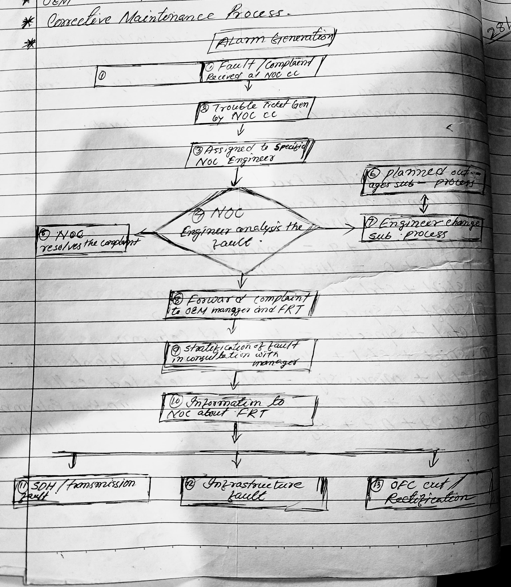

ABOUT ME
Hi, I am Gyandeep Duwarah from the 11th batch DDugky, and I made this website to store the notes of our classes.
OPTICAL FIBER
What is Optical Fiber?
An Optical fiber is a cylindrical fiber of glass, which is hair-thin in size, or any transparent dielectric medium. It is a technology that transmits information as light pulses along a glass or plastic fiber.
Note: (µm = micron)
Core Diameter: 5 µm to 100 µm
Cladding Diameter: 125 µm
Jacket Diameter (Buffer Coating): 250 µm to 900 µm

Core: The inner part of the optical fiber, made of an optically transparent dielectric medium, carries the light transmitted to the receiver.
Cladding: The outer optical material surrounding the core, with a refractive index lower than the core, helps keep the light within the core through total internal reflection.
Coating or Plastic Jacket: A plastic coating that protects the fibers, typically made of silicon rubber, with a diameter of 250-300 µm.
Types of Optical Fibers:
Single Mode: Used for long-distance transmission of signals.
Multi Mode: Used for short-distance transmission of signals.
Types of Optical fiber on the basis of refractive index
Step Index:-It consists of a core surrounded by the cladding which has a single uniform index of reflaction
Draded Index:-The reflected index of the optical fiber decrease as the radial distance from the fiber axis increases and distance from the fiber axis increases

Advantages of optical fiber:-
- 1.Secure
- 2.Fast
- 3.Light Weight
- 4.Higher Bandwidth
- 5.Thin on size
Disadvantages of optical fiber:-
- 1.Need expert for installation(more difficult to store)
- 2.Easilt gets Damage
- 3.Production and installation costly
Types of Splicing Machine:-
1.Fusion splicing machine:-It achives fiber optics termination with heat generated by an electric arch which it also called arch fusion.
2.Mechanical fusion splicing machine:-It is a function of two or more optical fibers which are precicely align at held in placed by a mechanical assemble.
Characteristics of optical fibers:-
Characteristics of a optical fiber are classified into two types:-
1.Linear
2.Non Linear
Linear Characteristics:-
(a) Low power Transmission:-Optical fiber behaves linearly at low power level ,with a direct propotional relationship between input and output signals.
(b) Attenuation:-Signal loss due to absorption and scattering follows a linear pattern.
(c)Chromatic dispersion:-Spreading of the signals due to different wavelength travelling different speed is linear.
Non Linear Characteristics:-
(a)Self Phase Modulation(SPM):-High intensity signals cause a phase shift, affecting signal quality.
(b)Cross-phase modulation(XPM):-Interraction between multiple signals effects their phases.
(c)Four-Wave mixing(FWM):-Signals at different wave lengths interract generation new frequencies.
(d)Stimulated Raman scattering(SRS):-High intensity signals transfer energy to lower frequency signals.
(e)Non Linear Reflective Index(NRI)High intensity signals change the fiber reflective index,affecting signals transmission.
Types Of Connectors:-
LC: Lucent connector
SC: Square connector
FC: Ferrule Connector
STC:- Straight Tips Connector
1.Lucent connector:-Push pull small from factor connector that used a 1.25 ferrule.
2.Ferrule Connector:-It is applied for single mode optic fiber and polization and methods maintaining optic fiber
3.Straight Tips Connector:-Is mainly used in multimood fiber optic cable
4.Square connector:-Is a fiber optic cable connector that use a push pull latching mechanism
Applications of optical Fiber uses of optied Fiber :-
- Telecommunication Purposes (BSNL, Jio Fiber)
- Banking purposes (ATM)
- Industrial Purposes
- Medical Purposes (Endoscopy)
- omputer networking
- Internet
- Military Purposes
- Local Area Network(LAN)
Structure Of a Diode:-

Conductor:- Conductor is a material that allow electicity to flow through i.For eg-Silver,Iron,Steal and Gold
*Draw a Block diagram of transmission of sound along the optical fiber-

- Sound is first converted into electricd signal by a Microphone.
- In the electrical Signal Modulde The intensity of Light form Laser.
- Then the information is carried along the fiber in a digital form.
- Reapeter is a device that repeat and increase the power of optical signal.
- At the recieving place a photodiode converts the digital light pulses into corresponding electrical signal.
- The electrical Signal Converted into Sound by an Earphone (Reciver).
Optical Transmitter:-
An optical transmitter is a device that converts electrical and analog signals into Linear modulating light signals.Them it release the data into the fiber optic cable.The pattern of light waves forms a code that carries a message. The cable than release the data emitted by the optical transmitter to the optical reciever. The reciever accpts the light signal an reformat the data into its original
Optical Reciever:-
The reciever essentially performs the opposite function of the transmitter. Optical reciever as recieve the light signal from the fiber optic cable and turn it break into information.A computer or television know how to understand and use the information. The decoded signal is sent to the computer or television.
Optical Regenerator:-
Sometimes a light signal must travel through a fiber optic cable over a long distance.Although signal degradation is minimal in a fiber optic cable. Some degradation does not occor. When a cable covers a long distance optical regenerators are placed at certain intervalas along the cable optical regenarators are fibers that have been treated with a laser.The laser properties strengthen the light signal that is travlling through a fiber optic cable.
*Diagram of OTDR:-

MCQ Quiz
Difference between Mechanical Splicing and Fusion splicing:-
| Mechanical Splicing | Fusion Splicing |
|---|---|
| It joins fibers using mechanical devices | Joins fiber by melting them together using heat |
| No heat or fusion involved | Creates a permanent strong bond |
| Quick Installation(5-10minutes) | Higher Intallation time(10=30minutes) |
| Lower Cost(equipment) | Higher cost(equipment and labour) |
| Resuable | Non-Resuable |
| Suitable for emergency repairs temporary connections,and field installation | Suitable for long term installation,high reliability application and underwater cables |
Corrective Maintainance Process Diagram:-
Write 10 guideline for optic cableing installation ?
Ans:-
- Never directly pull on he fiber itself you should pull on the fiber cable streght members only .
- Never exceed the maximum pulling load rating on long runs use proper lubricants and make sure they are compatible with the cable jacket . on realy long rums , pull from the diddle out to both ends .
- Never excud the cable band redius fiber is songer then steal when you pulli it stojght but it breaks easily sassily when bent to tighthy.
- Always roll the cable of the apool instead of spinning it off the spool and . this will puta twist in the cable for every turn on the spool never twist the fiber cable putting a twist in the cable can stress the fibers too .
- Make sure you fiber cables is long enough for the run . Fiber splicing make things complocated and expersive And it needs special protection . Try to make it one pull .
- Indroor cabls can be installed directly . But you might consider putting them inside innerduct . Provides a good way to identify fiber optic cabls and protect it from damage generally a result of some one cutting it by mistake you can get the innerduct with pulling type already
- Plan the installaltion . Create a deilled , written planof installation you can eliminate 95% of the problems installers can encounter by simply creating thish plan . the plan shold inlud equipment and supplies , fiber able specification, location of equipment tasting personnel experience level and assignment installation methods , identification of potential problem areas safty issues , ect .
- Pull do not push cable. Pushing can result in violation of the band radius .
- monitor the supply reel monitoring the supply reel during installation is necessary violalion of minimum bend rasius .
- Communicate along the path of insttation. Fiber cables can and do jump from uninonitored pulleys . The minimum crew shold have one person monitoring the pulling equipment one monitoring the supply reel , end one coordination all involved in the installation.